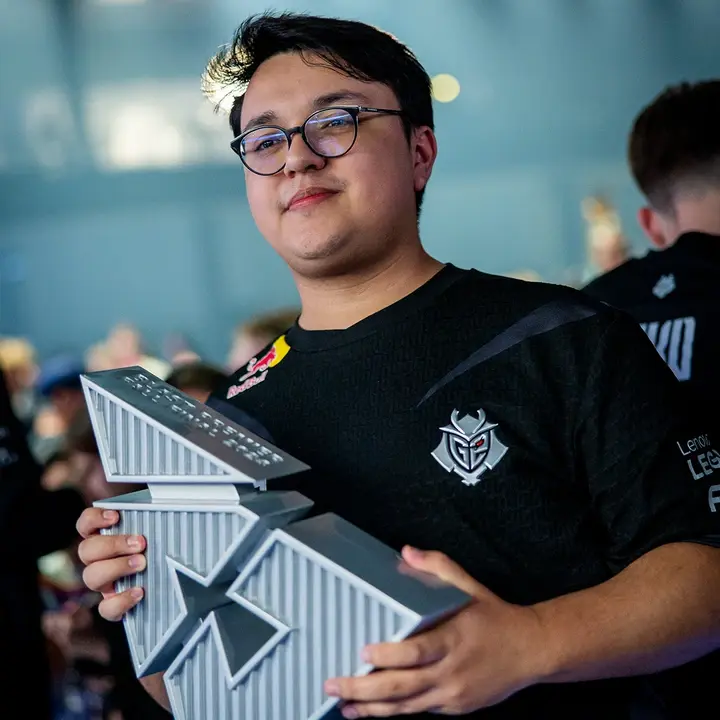
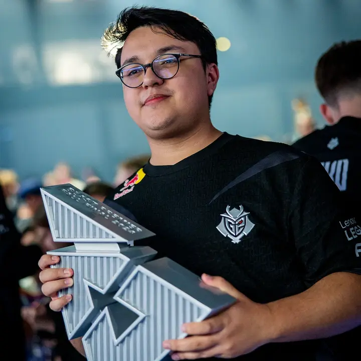

malbsMd,全名Malcolm Davidson,是一名来自危地马拉的CS职业选手。他在2024年BLAST秋季决赛中表现出色,帮助G2战队取得了优异的成绩。在决赛中，malbsMd的表现为G2队贡献了22个击杀，最终G2以16-10战胜了NAVI战队，赢得了比赛1。
malbsMd在比赛中的表现非常出色，他的天梯数据也非常亮眼。他在天梯比赛中接近200的ADR9（平均每局伤害），并且在比赛中经常能够打出高击杀数的表现。他的打法凶悍，经常前顶找人，这使得他在比赛中屡屡创造佳绩2。
此外，malbsMd在职业生涯中也经历了不少起伏。他曾表示，看到不如他的选手出贴纸会让他感到非常沮丧，这反映了他对自身要求的严格和对成功的渴望3。他的职业生涯中还有很多值得关注和学习的故事和成就。
近期表现 在刚刚结束的新加坡BLAST世决上,malbsMd所在的G2以3:0的比分击败Spirit,他在比赛中打出了1.21rating和84ADR的数据,显示出他近期状态的稳定和出色表现.
